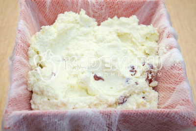

Пасха вишневая
”
Нежная творожная пасха с вишней для вашего пасхального стола
„
Время приготовления

Ингредиенты:
Творог 1,2 кг
Сахар 100 г
Сметана 100 г
Масло сливочное 100 г
Вишня вяленая 100 г
Яичный желток 3 шт
Приготовление:
Творог хорошо перемешать в миске.
Пропустить творог через мясорубку на 2 раза.
Желтки смешать в миске с сахаром и сливочным маслом (комнатной температуры).
Взбить в пышную массу.
Смешать творог, массу с желтками и сметану.
Хорошо взбить миксером всю творожную массу.
Добавить нарезанную вяленую вишню и перемешать.

Собрать пасочницу и застелить мокрой чистой марлей.

Переложить творожную массу в пасочницу.
Хорошо утрамбовать творожную массу в пасочницу и завернуть края. Установить пасочницу на тарелку, чтобы жидкость стекала. Убрать в холодильник на 1 сутки.
Пасха вишневая готова. Выложить на блюдо, убрать марлю и украсить по желанию.
Приятного аппетита! Со Светлой Пасхой!